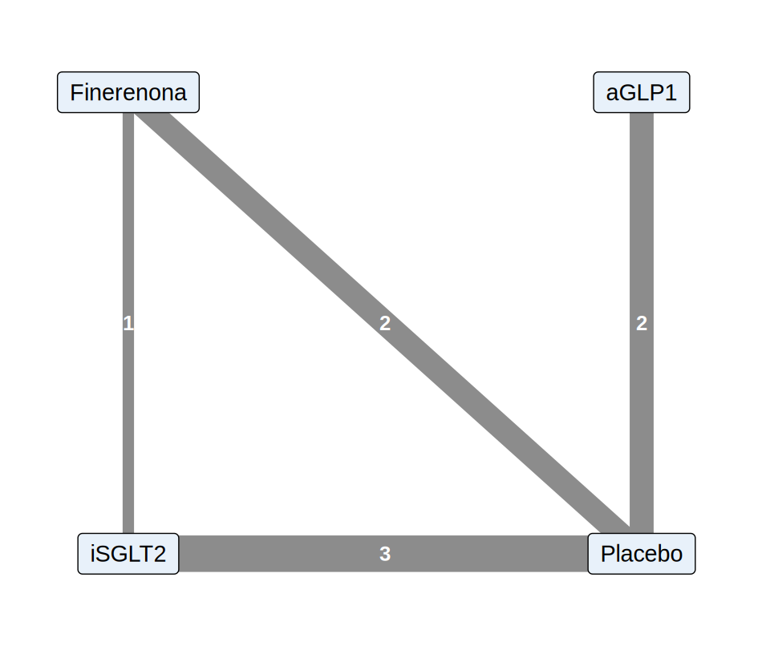

library(tidyverse)
library(metafor)
source("R/funciones_extra_a.R") # num(), pct()
source("R/funciones_cap21.R") # dibujar_red(), nma_contrastes(), pares_nma(), evidencia_directa_indirecta()
theme_set(theme_minimal(base_size = 12))Metaanálisis en red: visión general
Nota🩺 Escenario
Una paciente de 58 años con ERC G3b A3 y diabetes tipo 2 ya toma IECA a dosis máxima. Tienes tres opciones con ensayos que mostraron beneficio renal: un iSGLT2, un análogo de GLP-1 (aGLP-1) y finerenona. Casi todos los ensayos compararon cada fármaco contra placebo; casi ninguno enfrentó un fármaco con otro. Pero la decisión es entre ellos: ¿cuál protege más el riñón? Un metaanálisis clásico solo compara pares directos. El metaanálisis en red (NMA, network meta-analysis) usa toda la red de comparaciones, directas e indirectas, para estimar todas las parejas a la vez.
Este subcapítulo es una visión general: el objetivo es que entiendas la idea, los supuestos y las advertencias con un ejemplo pequeño que puedas seguir con calculadora, no que seas autor de un NMA. Todo es hipotético: los fármacos son reales, pero los ensayos, sus nombres y sus resultados son ficticios y no deben usarse para decidir nada clínico.
Lo que vamos a hacer
- Entender la comparación indirecta y por qué un NMA combina evidencia directa e indirecta.
- Revisar los dos supuestos centrales: transitividad y coherencia.
- Estimar un NMA mínimo de 4 tratamientos (iSGLT2, aGLP-1, finerenona, placebo) con código propio, ver la tabla directo frente a indirecto y las advertencias sobre el ranking.
Paso 1: la comparación indirecta
Si A se comparó con placebo y B también, aunque A y B nunca se hayan enfrentado, puedes estimar A frente a B con la resta de sus efectos frente al común (Bucher y cols., 1997):
\[ \hat\theta_{A\ vs\ B} = \hat\theta_{A\ vs\ P} - \hat\theta_{B\ vs\ P}, \qquad \text{Var}(\hat\theta_{A\ vs\ B}) = \text{Var}(\hat\theta_{A\ vs\ P}) + \text{Var}(\hat\theta_{B\ vs\ P}) \]
(trabajamos en log HR, de modo que restar es dividir los HR). Fíjate en que la varianza se suma: una comparación indirecta es menos precisa que cualquiera de las dos que la forman. Y conserva la aleatorización solo si cada ensayo la tenía: nunca se comparan directamente brazos de ensayos distintos.
Paso 2: la red de ensayos (hipotética)
Construimos una red mínima de 8 ensayos de dos brazos, con el log HR del evento renal compuesto (menos de 0 favorece al primer tratamiento) y su error estándar. Para poder comparar con una verdad, los números se inventaron en torno a HR verdaderos de 0.70 (iSGLT2), 0.82 (finerenona) y 0.89 (aGLP-1) frente a placebo, y un ensayo directo iSGLT2-finerenona. Todos son datos ficticios.
red <- tribble(
~ensayo, ~trat1, ~trat2, ~yi, ~sei, ~pct_dm,
"S1", "iSGLT2", "Placebo", -0.36, 0.10, 45,
"S2", "iSGLT2", "Placebo", -0.30, 0.14, 60,
"S3", "iSGLT2", "Placebo", -0.41, 0.08, 50,
"F1", "Finerenona", "Placebo", -0.15, 0.11, 55,
"F2", "Finerenona", "Placebo", -0.24, 0.09, 65,
"G1", "aGLP1", "Placebo", -0.10, 0.12, 100,
"G2", "aGLP1", "Placebo", -0.17, 0.15, 100,
"D1", "iSGLT2", "Finerenona", -0.10, 0.16, 55
)
orden <- c("iSGLT2", "Finerenona", "aGLP1") # tratamientos activos (placebo = referencia)
verdad <- c(iSGLT2 = log(0.70), Finerenona = log(0.82), aGLP1 = log(0.89), Placebo = 0) # log HR verdaderos
red |> mutate(HR = round(exp(yi), 2))# A tibble: 8 × 7
ensayo trat1 trat2 yi sei pct_dm HR
<chr> <chr> <chr> <dbl> <dbl> <dbl> <dbl>
1 S1 iSGLT2 Placebo -0.36 0.1 45 0.7
2 S2 iSGLT2 Placebo -0.3 0.14 60 0.74
3 S3 iSGLT2 Placebo -0.41 0.08 50 0.66
4 F1 Finerenona Placebo -0.15 0.11 55 0.86
5 F2 Finerenona Placebo -0.24 0.09 65 0.79
6 G1 aGLP1 Placebo -0.1 0.12 100 0.9
7 G2 aGLP1 Placebo -0.17 0.15 100 0.84
8 D1 iSGLT2 Finerenona -0.1 0.16 55 0.9 dibujar_red(red)
Cada fila es un ensayo y yi es el efecto del primer tratamiento frente al segundo. No hay ensayos entre aGLP-1 y los otros dos: esa comparación solo se puede hacer a través del placebo. La red tiene un bucle cerrado (iSGLT2-placebo-finerenona-iSGLT2) donde sí hay evidencia directa e indirecta, y una rama (aGLP-1) con solo evidencia indirecta frente a los otros activos.
Paso 3: los dos supuestos
Transitividad. Para que A frente a B a través de placebo tenga sentido, los ensayos de A-placebo y los de B-placebo deben ser comparables en todo lo que modifica el efecto (los modificadores del efecto: albuminuria, diabetes, TFGe, seguimiento…). En palabras clínicas: ¿habría sido razonable que cualquier paciente de cualquier ensayo recibiera cualquiera de los tres fármacos? No se puede probar; se evalúa mirando los ensayos. Aquí tenemos una columna, el porcentaje de pacientes con diabetes:
red |>
mutate(comparacion = paste(trat1, "vs", trat2)) |>
group_by(comparacion) |>
summarise(ensayos = n(), pct_diabetes_media = round(mean(pct_dm)), .groups = "drop")# A tibble: 4 × 3
comparacion ensayos pct_diabetes_media
<chr> <int> <dbl>
1 Finerenona vs Placebo 2 60
2 aGLP1 vs Placebo 2 100
3 iSGLT2 vs Finerenona 1 55
4 iSGLT2 vs Placebo 3 52Qué vemos. Los ensayos de iSGLT2 y de finerenona incluyeron entre 45 y 65 % de pacientes con diabetes, pero los dos de aGLP-1 fueron solo en diabéticos (100 %). Si el efecto del fármaco depende de tener o no diabetes, comparar aGLP-1 con los demás a través del placebo mezcla poblaciones distintas: es una amenaza a la transitividad, y no hay forma estadística de arreglarla. Hay que decirlo y limitar la conclusión (por ejemplo, restringirse a pacientes con diabetes).
Coherencia (o consistencia). Si en la red hay dos caminos para la misma comparación (uno directo y otro indirecto), deberían coincidir salvo azar. Si no, hay incoherencia, que suele ser señal de que la transitividad falla. Lo evaluamos en el Paso 5.
Paso 4: el NMA, paso a paso
Cada ensayo estima una diferencia entre dos tratamientos. Elegimos placebo como referencia y definimos tres parámetros: el efecto de iSGLT2, de finerenona y de aGLP-1 frente a placebo (efectos básicos). Cualquier ensayo es una combinación de ellos: S1 estima el iSGLT2, D1 estima iSGLT2 menos finerenona. Eso se escribe con una matriz de diseño X (1 para el primer tratamiento, −1 para el segundo, 0 el resto):
\[ \hat{\boldsymbol\beta} = (X^\top W X)^{-1} X^\top W\, \mathbf{y}, \qquad \text{Var}(\hat{\boldsymbol\beta}) = (X^\top W X)^{-1}, \qquad W = \text{diag}(1/EE_i^2) \]
Es una regresión ponderada por el inverso de la varianza, igual que el metaanálisis de 21.4, pero con varias columnas. La función nma_contrastes() (en R/funciones_cap21.R) la implementa; aquí la matriz y el resultado:
ajuste <- nma_contrastes(red, referencia = "Placebo", orden = orden)
ajuste$X # matriz de diseño: 8 ensayos x 3 parámetros iSGLT2 Finerenona aGLP1
[1,] 1 0 0
[2,] 1 0 0
[3,] 1 0 0
[4,] 0 1 0
[5,] 0 1 0
[6,] 0 0 1
[7,] 0 0 1
[8,] 1 -1 0tibble(tratamiento = names(ajuste$d), log_HR = ajuste$d, EE = sqrt(diag(ajuste$V)),
HR = exp(ajuste$d), li = exp(ajuste$d - 1.96 * sqrt(diag(ajuste$V))), ls = exp(ajuste$d + 1.96 * sqrt(diag(ajuste$V))),
HR_verdadero = exp(verdad[names(ajuste$d)])) |>
mutate(across(where(is.numeric), \(x) round(x, 2)))# A tibble: 3 × 7
tratamiento log_HR EE HR li ls HR_verdadero
<chr> <dbl> <dbl> <dbl> <dbl> <dbl> <dbl>
1 iSGLT2 -0.37 0.05 0.69 0.62 0.77 0.7
2 Finerenona -0.21 0.06 0.81 0.71 0.92 0.82
3 aGLP1 -0.13 0.09 0.88 0.73 1.06 0.89¿Y con metafor? Mismo modelo con rma() y la matriz de diseño como moderadores sin intercepto. Con efecto común ("FE") coincide con nuestra cuenta, y con REML añade un τ² común entre ensayos:
m_fe <- rma(yi = yi, vi = sei^2, mods = ajuste$X, intercept = FALSE, data = red, method = "FE")
m_reml <- rma(yi = yi, vi = sei^2, mods = ajuste$X, intercept = FALSE, data = red, method = "REML")
rbind(propio = ajuste$d, metafor_FE = coef(m_fe), metafor_REML = coef(m_reml)) |> round(3) iSGLT2 Finerenona aGLP1
propio -0.369 -0.214 -0.127
metafor_FE -0.369 -0.214 -0.127
metafor_REML -0.369 -0.214 -0.127c(Q_residual = m_fe$QE, gl = m_fe$k - ncol(ajuste$X), p = m_fe$QEp, tau2_REML = m_reml$tau2)Q_residual gl p tau2_REML
3.7101021 5.0000000 0.5918613 0.0000000 Qué vemos.
- Los HR frente a placebo son 0.69 (iSGLT2), 0.81 (finerenona) y 0.88 (aGLP-1). Las verdades (0.70, 0.82, 0.89) caen dentro de los intervalos de la tabla.
- Nuestra cuenta coincide con
rma(): 0.000000 de diferencia máxima. - La Q residual (3.71 con 5 grados de libertad, p = 0.59) y τ² = 0.000 no muestran heterogeneidad, pero con 8 ensayos esto casi no tiene poder (21.5): no equivale a decir que los ensayos sean homogéneos.
- Con ensayos de tres o más brazos, los contrastes de un mismo ensayo comparten el brazo de control y están correlacionados; hay que modelarlo (por ejemplo, con
rma.mv()y una matriz de covarianzas). Nuestro ejemplo solo tiene ensayos de dos brazos para no complicarlo.
Paso 5: tabla directo frente a indirecto
Con el modelo ya podemos estimar las seis comparaciones por pares. Para cada una calculamos además la evidencia directa (los ensayos que comparan exactamente ese par) y la indirecta (lo que dice el resto de la red sin esos ensayos), y comprobamos si coinciden:
pares <- pares_nma(ajuste)
di <- evidencia_directa_indirecta(red, pares, referencia = "Placebo", orden = orden)
fmt_hr <- \(est, se) ifelse(is.na(est), "-", sprintf("%.2f (%.2f a %.2f)", exp(est), exp(est - 1.96 * se), exp(est + 1.96 * se)))
tab_pares <- pares |>
left_join(di, by = c("trat1", "trat2")) |>
mutate(comparacion = paste(trat1, "vs", trat2),
verdad = exp(verdad[trat1] - verdad[trat2]),
z = (dir_est - ind_est) / sqrt(dir_se^2 + ind_se^2), p_incoherencia = 2 * pnorm(-abs(z)))
tab_pares |>
transmute(comparacion, ensayos_directos = k_directo, `HR directo` = fmt_hr(dir_est, dir_se), `HR indirecto` = fmt_hr(ind_est, ind_se),
`HR de la red (NMA)` = fmt_hr(est, se), `HR verdadero` = round(verdad, 2), p_incoherencia = round(p_incoherencia, 2))# A tibble: 6 × 7
comparacion ensayos_directos `HR directo` `HR indirecto` `HR de la red (NMA)`
<chr> <int> <chr> <chr> <chr>
1 iSGLT2 vs F… 1 0.90 (0.66 … 0.84 (0.71 a … 0.86 (0.73 a 1.00)
2 iSGLT2 vs a… 0 - 0.79 (0.64 a … 0.79 (0.64 a 0.97)
3 iSGLT2 vs P… 3 0.69 (0.61 … 0.74 (0.52 a … 0.69 (0.62 a 0.77)
4 Finerenona … 0 - 0.92 (0.73 a … 0.92 (0.73 a 1.15)
5 Finerenona … 2 0.82 (0.71 … 0.76 (0.54 a … 0.81 (0.71 a 0.92)
6 aGLP1 vs Pl… 2 0.88 (0.73 … - 0.88 (0.73 a 1.06)
# ℹ 2 more variables: `HR verdadero` <dbl>, p_incoherencia <dbl>Qué vemos.
- Directo, indirecto y NMA. Para iSGLT2 frente a finerenona hay un ensayo directo (HR 0.90 (0.66 a 1.24)) y una estimación indirecta a través de placebo (0.84 (0.71 a 1.00)). Son coherentes (p = 0.70), y el NMA (0.86 (0.73 a 1.00)) las combina, con un intervalo más estrecho que cualquiera de las dos: eso es lo que gana un NMA, precisión por usar toda la evidencia. El error estándar del NMA es 0.49 veces el del ensayo directo.
- Pares sin ensayo directo. iSGLT2 frente a aGLP-1 y finerenona frente a aGLP-1 solo tienen evidencia indirecta: HR 0.79 (IC 0.64 a 0.97) para el primero y 0.92 (IC 0.73 a 1.15) para el segundo. Son más imprecisas que las comparaciones con placebo y descansan por entero en la transitividad (Paso 3).
- Los tres valores de p de incoherencia son iguales (0.70), porque con un único bucle es la misma discrepancia vista desde tres lados. Y con un solo ensayo directo el contraste casi no tiene poder: no detectar incoherencia no la descarta.
Ranking: con cuidado
A los clínicos les gusta un orden. Se puede resumir con el P-score (Rücker y Schwarzer, 2015), que para cada tratamiento es el promedio, sobre los demás, de la probabilidad de que sea mejor que cada uno. Es el análogo frecuentista de la SUCRA:
nom <- c(orden, "Placebo")
mejor_que <- \(i, j) { # P(i mejor que j): menor log HR = mejor
r <- pares |> filter((trat1 == i & trat2 == j) | (trat1 == j & trat2 == i))
e <- if (r$trat1 == i) r$est else -r$est
pnorm(-e / r$se)
}
pscore <- map_dbl(nom, \(i) mean(map_dbl(setdiff(nom, i), \(j) mejor_que(i, j)))) |> set_names(nom)
round(sort(pscore, decreasing = TRUE), 2) iSGLT2 Finerenona aGLP1 Placebo
0.99 0.60 0.38 0.03 El orden es iSGLT2 (0.99) > finerenona (0.60) > aGLP-1 (0.38) > placebo (0.03), el mismo que el de las verdades (0.70, 0.82, 0.89, 1). Pero fíjate en que el HR de finerenona frente a aGLP-1 es 0.92 (0.73 a 1.15): su IC incluye el 1, así que no sabemos de verdad cuál de los dos es mejor. Un P-score alto puede venir de un efecto grande o de un tratamiento muy poco estudiado con un intervalo ancho. Por eso el ranking nunca va solo: se acompaña de las estimaciones con su incertidumbre y de la certeza de la evidencia (Cap. 22).
Paso 6: ¿y si no hay coherencia?
Para ver qué haría saltar la alarma, alteramos solo el ensayo directo: supongamos que en D1 el iSGLT2 hubiera salido peor que finerenona (log HR +0.25, en lugar de −0.10), con la misma precisión:
red_alt <- red |> mutate(yi = if_else(ensayo == "D1", 0.25, yi))
ajuste_alt <- nma_contrastes(red_alt, orden = orden)
di_alt <- evidencia_directa_indirecta(red_alt, pares_nma(ajuste_alt), orden = orden) |> filter(trat1 == "iSGLT2", trat2 == "Finerenona")
z_alt <- (di_alt$dir_est - di_alt$ind_est) / sqrt(di_alt$dir_se^2 + di_alt$ind_se^2)
c(directo_HR = exp(di_alt$dir_est), indirecto_HR = exp(di_alt$ind_est), z = z_alt, p = 2 * pnorm(-abs(z_alt))) directo_HR indirecto_HR z p
1.2840254 0.8423565 2.2961204 0.0216690 Qué vemos. El HR directo pasa a 1.28 y el indirecto sigue en 0.84: z = 2.3 (p = 0.022). Ahora sí hay incoherencia. Combinar los dos en un solo NMA daría un número intermedio que no representa a ninguno de los dos. Lo correcto es investigar por qué (¿otra población en D1?, ¿otra definición del desenlace?, ¿error de extracción, 21.3?) y, si no se explica, informar los dos resultados y bajar la certeza de la evidencia.
Tip💡 Con el paquete {netmeta} (código no verificado en el entorno de pruebas del libro)
netmeta es la implementación frecuentista que se usa en la literatura clínica (y la de P-scores). Nuestro mismo ejemplo, con la convención del paquete (TE = efecto de treat1 frente a treat2, en escala log para sm = "HR"); argumentos de versiones recientes (en las antiguas, comb.fixed/comb.random):
library(netmeta)
nm <- netmeta(TE = yi, seTE = sei, treat1 = trat1, treat2 = trat2, studlab = ensayo, data = red,
sm = "HR", reference.group = "Placebo", common = TRUE, random = TRUE)
summary(nm)
netgraph(nm) # la red
forest(nm) # efectos frente a la referencia
netrank(nm) # P-scores
netsplit(nm) # directo frente a indirecto (node-splitting)
netleague(nm) # tabla "liga" con todas las comparacionesTrampas frecuentes
Advertencia⚠️ Errores clásicos del metaanálisis en red
- Ignorar la transitividad: combinar ensayos con poblaciones muy distintas (aquí, solo diabéticos en aGLP-1) y presentar la comparación indirecta como si fuera tan sólida como un ensayo directo.
- Leer el ranking (P-score, SUCRA) como una verdad sin mirar los intervalos ni cuán estudiado está cada tratamiento.
- Confiar en que «no hay incoherencia» porque la prueba no es significativa: con pocos ensayos directos casi no tiene poder.
- Tratar los ensayos de tres brazos como dos ensayos independientes: duplica el brazo común y subestima la incertidumbre.
- Hacer un NMA con pocos ensayos y llamarlo definitivo: sirve para generar hipótesis y orientar ensayos directos, y su certeza se califica con las reglas propias del NMA (Cap. 22).
Importante🎯 En resumen
- La comparación indirecta estima A frente a B a través de un comparador común (resta de efectos; las varianzas se suman). Un NMA combina toda la evidencia directa e indirecta de la red.
- Requiere transitividad (ensayos comparables en los modificadores del efecto) y coherencia (directo e indirecto concuerdan). En nuestro ejemplo hipotético, los ensayos de aGLP-1 fueron solo en diabéticos: la transitividad es dudosa.
- El NMA mínimo es una regresión ponderada con matriz de diseño: HR frente a placebo de 0.69 (iSGLT2), 0.81 (finerenona) y 0.88 (aGLP-1), frente a las verdades 0.70, 0.82 y 0.89.
- Con evidencia directa e indirecta concordantes, el NMA da más precisión; con discordantes (Paso 6), hay que investigar, no promediar.
- El ranking (P-score) es un resumen, no un veredicto: acompáñalo de intervalos y de la certeza de la evidencia.
Ejercicio
- En
red, añade un ensayo directo aGLP-1 frente a finerenona (yi = -0.05,sei = 0.13,pct_dm = 100) y recalcula la red y la tabla directo/indirecto. ¿Cómo cambia la precisión de la comparación aGLP-1 frente a finerenona? - Calcula a mano (con una calculadora) la comparación indirecta de iSGLT2 frente a finerenona solo con los ensayos con placebo (promedia por inverso de la varianza cada rama y resta) y comprueba que coincide con la columna «HR indirecto» de la tabla.
- Si los dos ensayos de aGLP-1 se hubieran hecho en pacientes sin diabetes y el efecto del fármaco dependiera de la diabetes, ¿qué parte de la tabla dejaría de ser fiable y por qué?
Referencias
- Bucher HC, Guyatt GH, Griffith LE, Walter SD. The results of direct and indirect treatment comparisons in meta-analysis of randomized controlled trials. J Clin Epidemiol. 1997;50:683-691. (por verificar)
- Salanti G. Indirect and mixed-treatment comparison, network, or multiple-treatments meta-analysis: many names, many benefits, many concerns for the next generation evidence synthesis tool. Res Synth Methods. 2012;3:80-97. (por verificar)
- Rücker G, Schwarzer G. Ranking treatments in frequentist network meta-analysis works without resampling methods. BMC Med Res Methodol. 2015;15:58. (por verificar)
- Hutton B y cols. The PRISMA extension statement for reporting of systematic reviews incorporating network meta-analyses of health care interventions. Ann Intern Med. 2015;162:777-784. (por verificar)
- Higgins JPT y cols. (eds.). Cochrane Handbook for Systematic Reviews of Interventions, capítulo sobre metaanálisis en red.